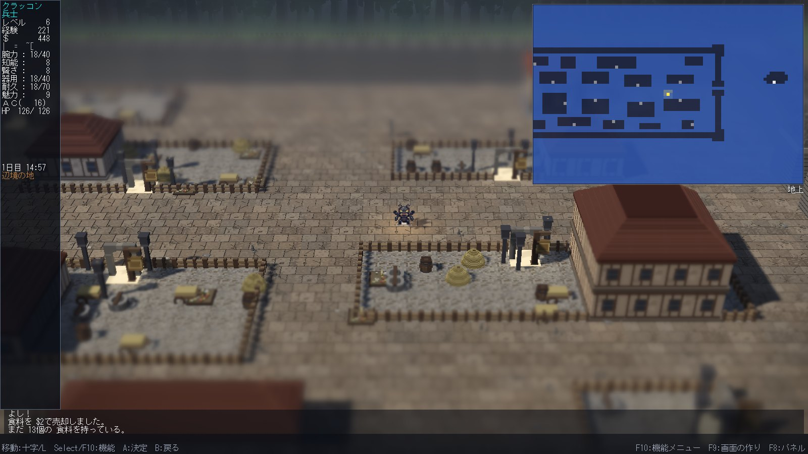
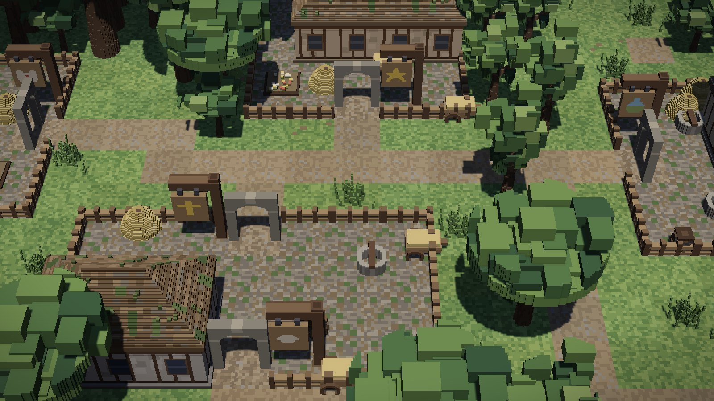
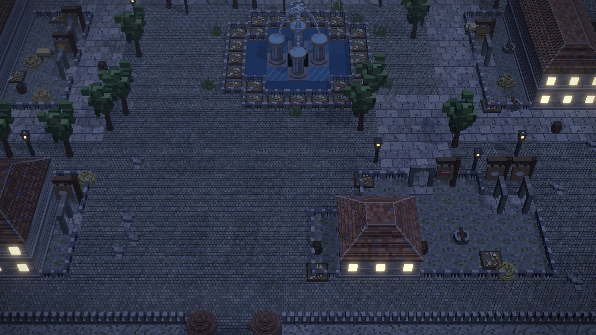

実機のキャプチャ
画面



Windows / ZIP 約 174MB
動かし方
| 対応環境 | Windows 10 / 11。OpenGL 4.6 対応が必要です。 |
|---|---|
| 手順 | ZIP を任意のフォルダへ展開し、その中の HengbandHd2d.exe を実行します。必ずそのフォルダを作業ディレクトリにして起動してください（assets/ と lib/ を相対で読みます）。 |
| ゲームパッド | XInput 対応。Xbox コントローラなどを繋ぐと十字キーで移動、A で決定、B で戻る、Select で機能メニューが開きます。 |
| 実行中のキー | F10 = 機能メニュー ／ F9 = 画面の作り ／ F8 = サブパネル ／ Alt + Enter = 全画面と窓の切り替え |